image_analysis.RmdThe image analysis functions kin.search(), kin.simple(), and kin.free() (i.e., the kin functions) require image sequences stored in a directory. The argument img.dir specifies which directory contains the images to be analyzed. Supported image formats include jpeg, png, and tiff.
Users can start analysis with images extracted from videos using some other software program (e.g., imageJ). However, they must be given unique file names that end in a sequence number. For example “image_01.jpeg”, “image_02.jpeg”, etc.
If the starting point of analysis is a video file, trackter’s video.to.images() can be used to extract images to a user-defined directory. This function is a wrapper for the av package’s av_video_code(). For example, the following with extract images from an 11-frame video of a swimming pumpkinseed sunfish included with the package.
library(trackter)
sunfish.vid <- system.file("extdata/vid", "sunfish_BCF_red.avi", package = "trackter")
dir.create("./sunfish_images")
vid.to.images(vid.path = sunfish.vid, out.dir = "./sunfish_images")The 11 files are now in the “./sunfish_images” directory and the first one is displayed
list.files("./sunfish_images")## [1] "sunfish_BCF_red_000001.jpg" "sunfish_BCF_red_000002.jpg"
## [3] "sunfish_BCF_red_000003.jpg" "sunfish_BCF_red_000004.jpg"
## [5] "sunfish_BCF_red_000005.jpg" "sunfish_BCF_red_000006.jpg"
## [7] "sunfish_BCF_red_000007.jpg" "sunfish_BCF_red_000008.jpg"
## [9] "sunfish_BCF_red_000009.jpg" "sunfish_BCF_red_000010.jpg"
## [11] "sunfish_BCF_red_000011.jpg"
EBImage::display(EBImage::readImage(list.files("./sunfish_images",full.names = TRUE)[1]),method = "raster")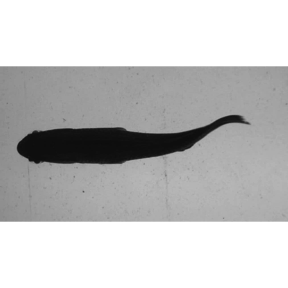
video.to.images() supports added FFmpeg functionality, allowing users to specify filters that may, for example crop, rotate, or adjust the size of the images. Filters can be passed to the vfilter argument as a character string, which in turn is passed to avs av_vidoe_encode(). For example, one can extract images from the same video and crop around their center at 900 pixels wide and 400 pixels deep with the following.
#Crop the central input area with size 900x300:
filt.crop <- 'crop=900:300'
#will overwrite images in the directory
vid.to.images(vid.path = sunfish.vid, out.dir = "./sunfish_images", vfilter=filt.crop,overwrite = TRUE) # extract## Extra audio frame dropped from outputNow, display one of the cropped images.
EBImage::display(EBImage::readImage(list.files("./sunfish_images",full.names = TRUE)[1]),method = "raster") To learn more about filters, users can check out the FFmpeg wiki site.
Here’s another example with a filter that doubles the contrast.
#boost the contrast
filt.br <- 'eq=contrast=2'
#extract and filter (overwriting the previous extraction)
vid.to.images(vid.path = sunfish.vid, out.dir = "./sunfish_images", vfilter = filt.br,overwrite = TRUE) ## Extra audio frame dropped from output
#display
EBImage::display(EBImage::readImage(list.files("./sunfish_images",full.names = TRUE)[1]),method = "raster")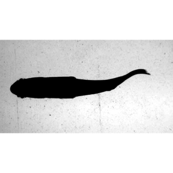
#clean up
#unlink("./sunfish_images",recursive = TRUE)For those who simply want to crop images or change their contrast without using FFmpeg filters, trackter offers crop.img() and contrast.img(), respectively. Continuing with the same image sequence, crop.img() is used here to crop the images with a rectangle described the arguments ul (the lower left xy position) and br (the bottom right xy position) and save them the a directory specified by out.dir.
#create the out.dir
dir.create("./sunfish_images2")
#crop at pixels 5,150 and 900,400
crop.img(img="./sunfish_images",out.dir ="./sunfish_images2",ul=c(5,150),br=c(900,400))
#display the first cropped image in the sequence
EBImage::display(EBImage::readImage("./sunfish_images2/sunfish_BCF_red_000001.jpg"),method="raster")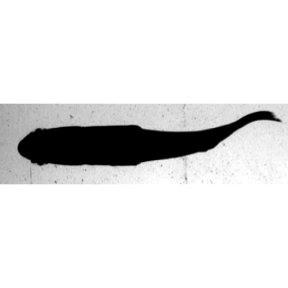
Here, the same image sequence has its contrast enhanced with contrast.img(). Contrast is doubled in this case with the argument c=2.
#contrast and overwrite imgages in out.dir
contrast.img(img="./sunfish_images",out.dir ="./sunfish_images2",c=2)
#display the first cropped image in the sequence
EBImage::display(EBImage::readImage("./sunfish_images2/sunfish_BCF_red_000001.jpg"),method="raster")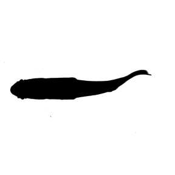
The thresholding process is an important step in many computer vision algorithms and the most straightforward method for segmenting (i.e., identifying) ROIs from an image field. In its simplest form, thresholding creates a binary image by classifying pixels as either white or black depending on their grayscale intensity. That is, each pixel in an image is replaced with a black pixel if its intensity is less than a fixed value and replaced a white pixel if its intensity is greater than this value. This threshold value is often represeted as the range of the image intensity scaled from 0–1.
The internal function find.roi() in trackter (on which all the kin functions depend) segments an image based on this simple process. By default, find.roi() automatically determines the threshold value by using Otsu’s method. This approach finds a threshold value that separates pixels into foreground and background classes by maximizing the variance between the foreground and background pixels. Optionally, users can specify a threshold value of 0–1 for the thr argument in the kin functions, which is in turn passed to find.roi().
For most cases where there is considerable contrast between the background and the target ROI (i.e., the fish, etc.), Otsu’s automatic threshold value will suffice. However, users can evaluate the binary results of their images with the thr.check() function before proceeding with ROI detection and analysis with the kin functions.
As an example, here’s an image of a swimming pumpkinseed sunfish that’s loaded with the package. For subsequent analysis, it is copied to an appropriately named directory.
im <- system.file("extdata/img/sunfish_BCF.jpg", package = "trackter")
dir.create("./images")
file.copy(im,"./images/sunfish_BCF.jpg")## [1] TRUE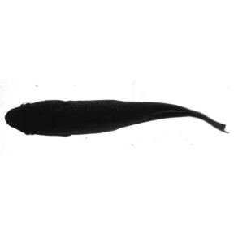
Now, we can check the binary results of 9 separate threshold values, 0.1–0.9 by default. Notice that thr.check() also prints the automatically calculated Otsu value for reference.
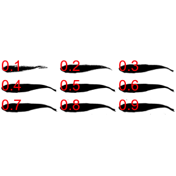
## [1] 0.5605469Users can alter the range of threshold values that are used for the nine binary images with the min and max arguments. For example . . .
thr.check("./images/sunfish_BCF.jpg",min = 0.2,max=0.6)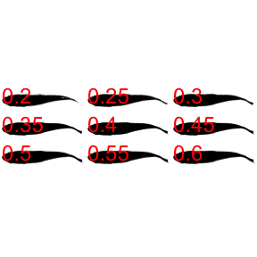
## [1] 0.5605469kin functions
kin functions output
Functionality and output within trackter make use of the data.table structure. Objects returned by trackter’s kin functions can be rather large for even modest analyses (e.g., hundreds of rows of midline coordinates from hundreds of frames). All three kin functions, kin.simple(), kin.search(), and kin.free(), return data as a list of data tables. Specifically, these include:
kin.dat: A data table consisting of frame-by-frame position parameters for the ROI determined by the search.for argument (see below).midline: A data table containing, for each frame described by the frames argument, the x and y position of the midline. This also includes midline points fit to a smooth spline or loess model.cont: A data table containing x and y positions of the contours used to calculate the data in the kin.dat and midline tables.cont.sm: A data table containing the smoothed x and y positions of the contours.all.classes: A data table containing position data for all ROIs detected.mid.pred: A data table containing the theoretical midline based on a linear model of the head. The argument ant.per is used to isolate the head and this section of the midline produces the linear prediction that extends the length of the ROI.dim: the x and y dimensions of the images analyzedThe components of each table are described in detail within the documentation for the kin functions (e.g., ?kin.search()).
In addition to the table output, if the save argument is set to TRUE, the 'kin functions will save midline data over the original images in a specified output directory. This capability is outlined in the Visualization article.
kin functions
Users of trackter have three kin functions available for the extraction of target ROIs and initial kinematic analysis: kin.search(), kin.simple(), and kin.free(). The choice of which kin function to use is not arbitrary and depends on the experimental condition. Suggested uses are summarized here:
| kin function | experimental condition |
|---|---|
| kin.simple() | relatively static in the image field, intended ROI is largest, typical flume experiments |
| kin.search() | relatively static in the image field, other large non-ROIs in the image field, typical flume experiments with objects meant to alter flow |
| kin.free() | free-moving ROI, with or without objects meant to alter flow |
The kin functions use find.roi() to segment and screen candidate ROIs, applying the thresholding techniques described above. After binarization and segmentation, find.roi() produces a list of candidate ROIs that are filtered according to a few criteria. Users can pass a few or all arguments related to these criteria to find.roi(), depending on which kin function they use for image analysis.
One screening argument is recognized in all three kin functions. As the target ROI in swimming experiments is typically large relative to the image field, users can filter ROIs by specifying a minimum size (in % area of the 2D pixel field) with the argument size.min.
kin.simple(), as the name implies, segments and screens ROIs with find.roi() using only the the size criterion. This is intended for simple, yet often attainable conditions where the non-target ROIs are smaller than the target, e.g., a swimming animal taking up most of the image field. This condition is satisfied in the image displayed above and kin.simple() performs just fine in extracting position and contour data.
Here, the image above is analyzed using kin.simple()and then the trailing edge (‘x’ and ‘y’ in the kin.dat table returned by kin.simple()) is plotted over this frame using trackter’s data.overlay() function.
#run kin.simple()
kin.sim <- kin.simple(image.dir = "./images")## Warning: `data_frame()` was deprecated in tibble 1.1.0.
## Please use `tibble()` instead.
## This warning is displayed once every 8 hours.
## Call `lifecycle::last_lifecycle_warnings()` to see where this warning was generated.
#overlay the position of the trailing edge
data.overlay("./images/sunfish_BCF.jpg",over=kin.sim$kin.dat[,.(x,y)],col="red",cex=2,pch=8)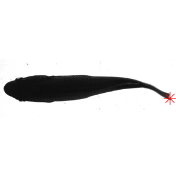
For image fields that contain other large contrasted objects, kin.search() or kin.free() should be used as they pass additional arguments to find.roi() via the search.for option. This argument accepts one of four values that result in different search criteria:
search.for='offset': A centroid that is the shortest linear distance to the center of the fieldsearch.for='offset.x': A centroid x position that is closest to the x position of the center of the fieldsearch.for='offset.y': A centroid y position that is closest to the y position of the center of the field ()search.for='largest': The largest ROI (the default)As an example, let’s consider a different scenario in which a large obstruction is placed in the flume to alter the flow, as in the image below.
im2 <- system.file("extdata/img", "sunfish_search2.jpg", package = "trackter")
dir.create("./images2")
file.copy(im2,"./images2/sunfish_search2.jpg")
EBImage::display(EBImage::readImage("./images2/sunfish_search2.jpg"),"raster")In this case, kin.simple() is a poor choice. It finds the trailing edge of the largest ROI, as expected.
kin.sim <- kin.simple(image.dir = "./images2")
data.overlay("./images2/sunfish_search2.jpg",over=kin.sim$kin.dat[,.(x,y)],col="red",cex=2,pch=8)kin.search(), which permits more flexible ROI filtering, is the better choice. With search.for='offset',kin.search() finds the ROI with a centroid that is closest to the image center.
kin.srch1 <- kin.search(image.dir = "./images2", search.for="offset")
data.overlay(img = "./images2/sunfish_search2.jpg",over=kin.srch1$kin.dat[,.(x,y)],col="red",cex=2,pch=8)Using search.for='offset.x' or search.for='offset.y' yields the same results in this case (the red and blue symbols, respectively).
kin.srch2 <- kin.search(image.dir = "./images2", search.for="offset.x",ant.per = 0.20)
kin.srch3 <- kin.search(image.dir = "./images2", search.for="offset.y",ant.per = 0.20)
data.overlay(img ="./images2/sunfish_search2.jpg",over=rbind(kin.srch2$kin.dat[,.(x,y)],kin.srch3$kin.dat[,.(x,y)]),col=c("red","blue"),cex=2,pch=c(8,10))The functions kin.simple() and kin.search() assume that ROIs maintains a largely horizontal, static, and left-facing position in the image field, i.e., that the anterior (leading edge) is left of the posterior (trailing edge). Using these two functions, the midline of the body contour is calculated as the vertical midpoint between minimum and maximum y values at each x position along the body contour.
This, of course, isn’t a condition met for many experimental conditions, especially for free swimming organism. For instance, for an S-shape contour oriented vertically, calculations of the midline using the algorithm implemented in kin.simple() and kin.search() would yield more than one four or more y coordinates for every x coordinate. One could constantly rotate the ROI’s contour when this is the case for any frame in a series, but then this introduces the problem of the relative positions between frames being meaningless. trackter’s kin.free() function can be used in the case of free-swimming or erratically positioned organisms.
Take for instance, a 50-frame video of a crawling roundworm (C. elegans) from the supplementary material in @pierce2008genetic is analyzed. After image extraction, both kin.search() and kin.free() are run on the image sequence in a new directory. Notice that, for kin.free(), the chosen midline method is Delaunay triangulation (ml.meth = 'del', see below). Not that, due to the worm’s small size in the image field, the minimum size argument is set to size.min=0.01.
cel.vid <- system.file("extdata/vid", "celegans3.avi", package = "trackter")
dir.create("./cel_images")
vid.to.images(vid.path = cel.vid, out.dir = "./cel_images")## Extra audio frame dropped from output
kin.cel <- kin.search(image.dir = "./cel_images",thr=0.8,ant.per=0.1,size.min=0.01)
kin.cel.fr <- kin.free(image.dir = "./cel_images",ml.meth = "del",thr=0.8,ant.per=0.1,size.min=0.01)Now, the results of the midline retrieved by the two methods are compared. First, the results for kin.search() are plotted over an original frame using data.overlay().
cel.img1 <- list.files("./cel_images",full.names = TRUE)[1]
data.overlay(cel.img1,over=kin.cel$midline[frame==1,.(x,y)],col="red",pch=16)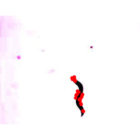
Now the results using kin.free().
data.overlay(cel.img1,over=kin.cel.fr$midline[frame==1,.(x,y)],col="red",pch=16)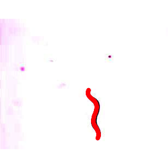
As you can see, kin.free() performs much better.
As with the other kin functions, kin.free() also relies on find.roi(), but estimates the midline—and therefore the head and trailing-edge positions—by one of three user-defined methods implemented in these internal functions:
free.ml.hull(): creates a convex hull around the ROI’s contour and then defines the anterior and posterior tips as the two coordinates in the hull that are farthest from one another. This function then bisects the contour across an axis determined by the tips, creates two vectors of equally spaced coordinates for each half of the body, and then calculates the midline as the average x and y position of each ordered pair of contour coordinates.free.ml.ang(): performs the same operations as free.ml.hull(), but, before bisection, refines the tips by finding coordinates that form the vertex of the sharpest angle within end regions of the contour. *free.ml.del(): estimates the midline coordinates through Delaunay triangulation and Voronoi tessellation using the R package deldir. Invoking functions from the sp and igraph packages, triangulated points that lie within the contour are used to build a distance-weighted minimum spanning tree that expands until the path intersects with the contour. The extrema of the midline path are then indexed as the first and last according to their distance from one of the candidate tips found using a hull as in free.ml.hull and free.ml.ang.free.ml.ang()and free.ml.hull() may be more appropriate for complicated outlines (i.e., those with appendages). free.ml.del tends to produce better results when an ROI has contour regions that overlap (i.e, kinks or snakes back on itself); however, it produces less precise midlines for complicated contours and is slower for high resolution outlines. In the example above, free.ml.hull() and free.ml.del() perform equally as well.
Note that reducing the resolution with argument ‘red’ when implementing these functions in kin.free() may hasten the speed considerably.
To see their different approaches and outcomes, these three functions are run on a smoothed contour retrieved from kin.free(). Note that the free.ml() functions take a matrix with named x and y columns as input.
Now the three midline functions are run on this contour.
cel.ml.ang <- free.ml.ang(as.matrix(cel.cont))
cel.ml.hull <- free.ml.hull(as.matrix(cel.cont))
cel.ml.del <- free.ml.del(as.matrix(cel.cont))You can have a look at the midline retrieved by these three functions plotted over the smoothed contour using ggplot.
cel.ml.ang$ml[,`function`:="free.ml.ang()"]
cel.ml.hull$ml[,`function`:="free.ml.hull()"]
cel.ml.del$ml[,`function`:="free.ml.del()"]
cel.ml <- rbind(cel.ml.ang$ml,cel.ml.hull$ml,cel.ml.del$ml)
library(ggplot2)
qplot(dat=kin.cel.fr$cont.sm[frame==1],x=x,y=y)+geom_point(dat=cel.ml,aes(x,y),col="red")+scale_y_reverse()+facet_wrap(`function`~.,nrow=1)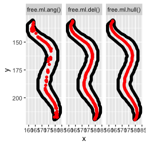
In kin.free(), the position of the anterior of the ROI (i.e., the leading edge) is determined by the displacement of the ROI between the first two frames. Thus, the use of kin.free() requires the analysis of at least two frames. For analyses of relatively static ROIs in the field (e.g., steadily swimming animals in flumes, etc.), automatically determining the anterior of the ROI may be spurious. In this case, the default automatic determination of the anterior can be overridden by specifying ‘l’, ‘r’, ‘u’, ‘d’ with the argument ant.pos. These values specify that the anterior region of the ROI is leftmost, rightmost, upmost, or downmost in the field, respectively, and assumes that the origin of the pixel field (0,0) is the upper left corner of each frame.
Using kin.free() in these cases will come at a cost in terms of processing speed due to the more involved midline procedure with the free.ml functions. Therefore, if the ROI is oriented nearly horizontally, kin.simple() or kin.search() will produce similar results faster.
To demonstrate the similar results, yet increased processing time, kin.simple() and kin.free() are run on an 11-frame video of a swimming pumpkinseed sunfish after image extraction with vid.to.images2().
sunfish.vid <- system.file("extdata/vid", "sunfish_BCF_red.avi", package = "trackter")
dir.create("./sunfish_images")## Warning in dir.create("./sunfish_images"): './sunfish_images' already exists
vid.to.images(vid.path = sunfish.vid, out.dir = "./sunfish_images")## Extra audio frame dropped from output
system.time(sunfish.kin.sim <- kin.simple(image.dir = "./sunfish_images",ml.meth = list("spline",0.2)))## user system elapsed
## 3.072 0.594 3.800
system.time(sunfish.kin.fr <- kin.free(image.dir = "./sunfish_images",ant.pos = "l"))##
## Attaching package: 'data.table'## The following objects are masked from 'package:dplyr':
##
## between, first, last## user system elapsed
## 9.838 1.083 12.390Now the results are plotted for a single frame using data.overlay(). First he results from kin.simple(), then the results fron kin.free().
sunfish.frame1 <- list.files("./sunfish_images",full.names = TRUE)[1]
data.overlay(sunfish.frame1,over=sunfish.kin.sim $midline[frame==0,.(x,y.sm)],col="red",pch=16)
data.overlay(sunfish.frame1,over=sunfish.kin.fr $midline[frame==0,.(x,y.sm)],col="red",pch=16)Despite the increased processing time, using kin.free() may be an attractive option if the target ROI is static and oriented vertically or toward a corner of the image field.